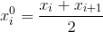

Bảng phân bố tần số và tần suât
Mục lục
Khái niệm cơ bản
Dấu hiệu. Giá trị của dấu hiệu
Vấn đề người điều tra nghiên cứu quan tâm như dân số của một thành phố, tỉ lệ nam nữ của một nước, năng suất lúa trong 1 năm,... được gọi là dấu hiệu. Người thực hiện điều tra thống kê cần xác định tập hợp các đơn vị điều tra tương ứng với một số liệu gọi là giá trị của dấu hiệu. Người điều tra ghi các giá trị của số hiệu của các đơn vị vào bảng số liệu.
Ví dụ: bảng số liệu dưới đây cho biết: Dấu hiệu điều tra là diện tích của một số nước Đông Nam Á, tập hợp các đơn vị điều tra là 5 nước trong bảng bên trái, các giá trị trong bảng bên phải là các số liệu thống kê hay giá trị của dấu hiệu.

Tần số, tần suất
Một bảng số liệu có N giá trị nhưng chỉ có k giá trị khác nhau x1, x2,..., xk.
Giá trị xi xuất hiện ni lần, ta nói ni là tần số của giá trị xi, tỉ số fi = ni / N được gọi là tần suất của xi. Với:
- n1 + n2 + ... + ni = N
- f1 + f2 + ... + fi = 1 (100%)
Thời gian hoàn thành một sản phẩm ở một nhóm công nhân (đơn vị: phút)
Giá trị x1 xuất hiện 4 lần, ta có n1 = 4.
Tương tự, n2 = 5; n3 = 20; n4 = 10; n5 = 8; n6 = 3 lần lượt là tần số của các giá trị trên.
Tần suất của giá trị x1 là f1 = 4 / 50 = 8%.
Tương tự, f2 = 5 / 50 = 10%; f3 = 20 / 50 = 40%; f4 = 10 / 50 = 20%; f5 = 8 / 50 = 16%; f6 = 3 / 50 = 6% lần lượt là tần suất của các giá trị trên.
Bảng phân bố tần số và tần suất
Bảng phân bố tần số và tần suất rời rạc
Từ bảng số liệu thống kê ta liệt kê ra các giá trị khác nhau và các tần số, tần suất tương ứng ta được bảng phân bố tần số, tần suất rời rạc.
Ví dụ về bảng phân bố tần số và tần suất rời rạc:
Bảng phân bố tuổi thọ của 30 bóng đèn
điện được thắp thử (đơn vị: giờ)
Mỗi giá trị về tuổi thọ của bóng đèn đều có tần số và tần suất của giá trị đó.
Bảng phân bố tần số và tần suất ghép lớp
Khi có một bảng số liệu thống kê có một số khá lớn các số liệu người ta chia các số liệu thành các lớp. Khoảng chứa tất cả các số liệu được chia thành các khoảng hay nửa khoảng nhỏ bằng nhau. Mỗi khoảng nhỏ là một lớp. Số các số liệu nằm trong một lớp là tần số của lớp ấy. tỉ số của tần số một lớp với tổng các số liệu của bảng là tần suất của lớp ấy. Mỗi lớp ta chọn một giá trị đại diện cho các giá trị của lớp. Thường thường lớp (xi; xi + 1) người ta lấy  làm giá trị đại diện. Bảng ghi tất cả các lớp với các tần số, tần suất tương ứng được gọi là bảng phân bố tần số, tàn suất ghép lớp.
Ngoài ra, nếu bảng đó bỏ cột tần số thì sẽ có bảng phân bố tần suất ghép lớp, bỏ cột tần suất thì sẽ có bảng phân bố tần số ghép lớp.
Ví dụ về bảng phân bố tần số và tần suất ghép lớp:
Bảng phân bố tần số và tần suất ghép lớp chiều cao của
35 cây bạch đàn (đơn vị: mét)
Các giá trị cùng thuộc một nhóm trong cột lớp được xếp vào một nhóm và nhóm đó có tần số và tần suất từ các giá trị bên trong nhóm đó.
Các dạng bài tập
- Cho các số liệu thống kê, lập bảng phân bố tần số và tần suất.
- Cho bảng phân bố tần suất, lập bảng phân bố tần số và ngược lại.
- Cho bảng phân bố, nhận xét về dấu hiệu của bảng.